Android11.0_User’s Compilation Manual_V1.0
Document classification: □ Top secret □ Secret □ Internal information ■ Open
Copyright
The copyright of this manual belongs to Baoding Folinx Embedded Technology Co., Ltd. Without the written permission of our company, no organizations or individuals have the right to copy, distribute, or reproduce any part of this manual in any form, and violators will be held legally responsible.
Forlinx adheres to copyrights of all graphics and texts used in all publications in original or license-free forms.
The drivers and utilities used for the components are subject to the copyrights of the respective manufacturers. The license conditions of the respective manufacturer are to be adhered to. Related license expenses for the operating system and applications should be calculated/declared separately by the related party or its representatives.
Application Scope
This software manual is applicable to the OKMX8MPQ-C platform Android11.0 operating system of Forlinx.
Revision History
Date |
Version |
Revision History |
|---|---|---|
16/08/2022 |
V1.0 |
OKMX8MPQ-C-Android 11.0 User’s Compilation Manual Initial Version. |
Overview
This manual is designed to enable you to quickly understand the compilation process of the products and familiarize yourself with the compilation methods of Forlinx products. The application needs to be cross-compiled on an ubuntu host before it can run on the development board. By following the methods provided in the compilation manual and performing practical operations, you will be able to successfully compile your own software code.
The manual will provide instructions for setting up the environment but there may be some unforeseen issues during the environment setup process. For beginners, it is recommended to use the pre-configured development environment provided by us. This will allow you to quickly get started and reduce development time.
Linux systems are typically installed in three ways: dual system on a real machine, single system on a real machine, and virtual machine. Different installation methods have their advantages and disadvantages. This manual only provides methods to build ubuntu in a virtual machine.
Hardware Requirements: It is recommended to have at least32GB memory or above.It allows for allocating a sufficient memory to the virtual machine (recommended to allocate16GBor above), while still leaving enough resources for other operations onWindows. Insufficient memory allocation may result in slower performance onWindows.
The manual is mainly divided into four chapters:
Chapter 1. mainly covers the installation of VMware and Ubuntu, using VMware Workstation 15 Pro 15.1.0 and 64-bit Ubuntu 18.04 respectively. If you are not very familiar with virtual machines and Ubuntu, it is recommended to use the same versions as ours;
Chapter 2. mainly introduces the method of loading the ubuntu development environment provided by Forlinx, and the development environment is 64-bit ubuntu18.04;
Chapter 3. provides methods for setting up a new Ubuntu development environment. This section uses 64-bit Ubuntu 18.04 as an example to describe the creation of Ubuntu. Due to different computer configurations, there may be unexpected problems in the building process. It is recommended that beginners directly use the environment we have built;
Chapter 4. mainly covers the methods for compiling development board-related source code, including installing cross-compilation tools and compiling kernel source code;
Chapter 5. is mainly about the development of Android application, which introduces the installation and use of Android studio;
Chapter 6. focuses on the two ways to burn the compiled image into the development board, which is also described in the software manual.
A description of some of the symbols and formats associated with this manual:
Format |
Meaning |
|---|---|
Blue font on gray background |
Refers to commands entered at the command line (Manual input required). |
Black font on gray background |
Serial port output message after entering a command |
Bold black on gray background |
Key information in the serial port output message |
// |
Interpretation of input instructions or output information |
Username@Hostname |
root@OK8MP: Account information for serial port login and network login of the development board; |
root@okmx8mm: The user name is root and the host name is OK-MX8MPX-C, indicating that the root user is used for operations on the development board;
//：Explanation of the instruction, no input required;
lls /run/media: Blue text on a gray background indicates relevant commands that need to be manually input;
mmcblk2p1 **sda1 ：**The black font with gray background is the output information after the command is input, and the bold font is the key information, which indicates the mounting directory of the TF card.
1. Vmware Installation
Virtual Machine refers to a complete computer system with complete hardware system functions simulated by software and running in a completely isolated environment. Virtual machines can simulate other kinds of operating systems; it is convenient for us to manage and use different development environments and operating systems in the development process.
Common virtual machine software includes VMware (VMWare ACE), Virtual Boxand Virtual PC, all of which can virtualize multiple computers on Windows systems. Our company adopts VMware. If you are not familiar with the virtual machine software, it is recommended to use the same virtual machine software as ours.
1.1 VMware Software Download and Purchase
Go to the VMware website https://www.vmware.com/cn.html to download Workstation Pro and get the product key. VMware is a paid software that requires purchasing, or you can choose to use a trial version.

After the download is complete, double-click the installation file to start the installation program.
1.2 VMware Installation
Step 1: Double-click the startup program to enter the installation wizard, and click “Next”;

Step 2: Check “I accept the terms in the license agreement (A)” and click “Next”;

Step 3: You can modify the installation location, install it to the partition where your computer installs the software, and click “Next”;

Step 4: Decide whether to check the two check boxes and click “Next”:

Step 5: Check the option to add the shortcuts and click “Next”;

Step 6: Click “Install”;

Step 7: Wait for the installation to complete;

Step 8: After the installation is completed, you can click “Finish” for trial. If you need to use it for a long time, please buy it from the official and fill in the license. Go to the license activation page and enter the purchased license key.

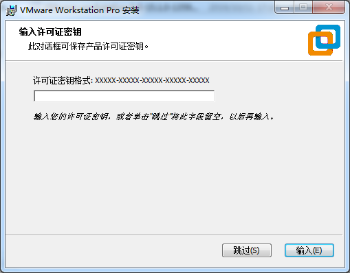
You can also click “Skip”. Once done, open the VMware software, click on “Help” in the status at the top, and enter the license key in the pop-up window.
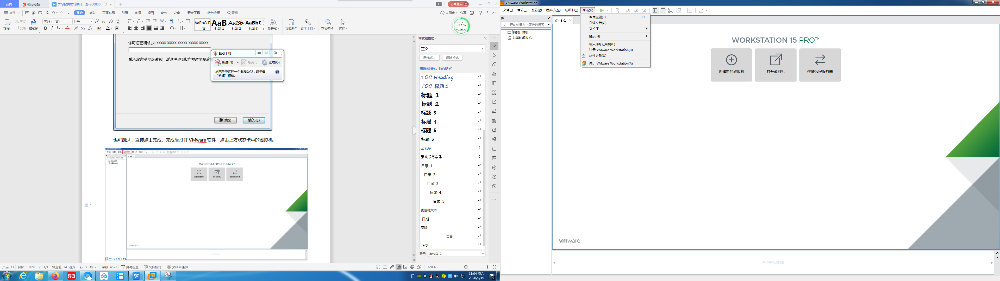
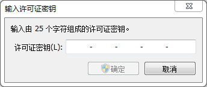
1.3 VMware Network Connection
1.3.1 NAT Connection Method
By default, after the virtual machine is installed, the network connection method is set to NAT, which shares the host machine’s IP address. This configuration does not need to be changed when performing tasks like installing dependencies or compiling code.
In the virtual machine, when the VMware virtual network card is set to NAT mode, the network in the Ubuntu environment can be set to dynamic IP. In this mode, the virtual NAT device is connected to the host network card to communicate with the Internet. This is the most commonly used way for our virtual machine to access the external network.
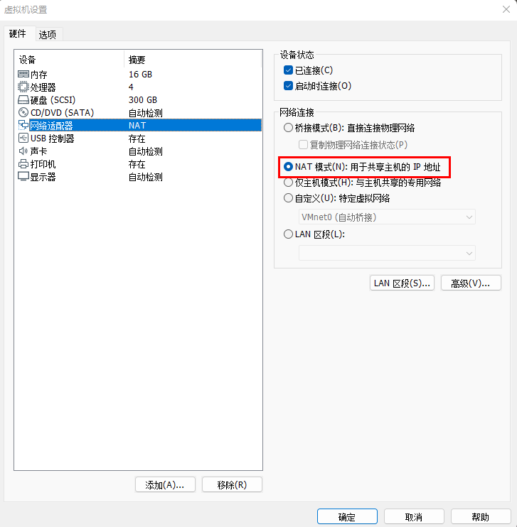
1.3.2 Connections for Bridge
1.3.2.1 Vmware Settings
If you are using TFTP, the SFTP virtual machine’s network connection is “Bridge”.
Step 1：Click on the “Settings” option under the VM menu, and if it is a server, then you will need to configure the settings. This will open the virtual machine settings dialog box, as shown in the following image；

Step 2：Connect the mode and set it；
Step 3：After entering the virtual machine system, set the IP and other parameters of the virtual machine according to the “Set Network Parameters”.
1.3.2.2 Ubuntu Network Settings
The following describes the steps to set the network in the virtual machine:
Step 1: Start Ubuntu, the root user logs in the system, click the drop-down button at the top right of the desktop, and the following options will pop up；
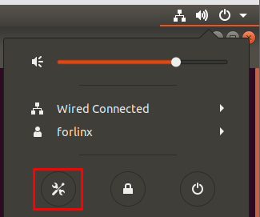
Step 2: Click “Network” to enter the network settings；

Step 3: Click IPv4, select “Manual”, enter your IP address, subnet mask, gateway, and DNS, and click “Apply” to save. The network settings are successful；
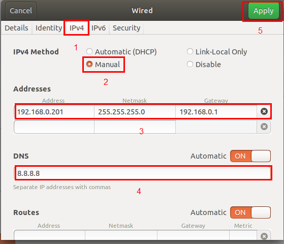
Step 4: Restart network services, close and reopen Wired；

Step 5: Test the IP of the host is 192.168.0.200. Use the virtual machine to ping the host:
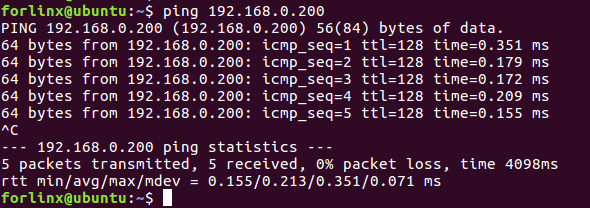
As shown in the figure, the network setting is successful. Once you’ve set this up, you’re ready to set up the server you need.
2. Importing the Forlinx Development Environment
Note:
It is recommended for beginners to directly use the pre-built virtual machine environment provided by Forlinx, which already includes installed cross-compiler and Qt environment. After understanding this chapter, you can jump directly to Chapter 4. Compilation;
If you need to manually set up the development environment, you can directly skip this chapter and refer to “Chapter 3. Building the Development Environment Manually”;
The development environment provided is: forlinx (username), forlinx (password).
Forlinx provides an installed Ubuntu development environment, which you can directly open and use in Vmware without installing additional software.
First, download the development environment provided by Forlinx. There is MD5 verification file in the development environment data. After downloading the development environment data, first perform MD5 verification on the compressed package of the development environment (MD5 verification can be performed by selecting MD5 online tools on the network, or by downloading MD5 verification tools, which can be selected according to the actual situation). Check whether the verification code is consistent with the verification code in the verification file. If they are consistent, the downloaded file is normal; otherwise, the file may be damaged and needs to be downloaded again.

Select the zip and right-click to extract it to OKMX8MP-Android11.0-VM 15_1_0-ubuntu18_04.
After unzipping, the OK8MP-Android11.0-VM 15_1_0-ubuntu18_04文件夹中的OK8MP Android11.0 folder is the file to be opened by the virtual machine.
Open the installed virtual machine.
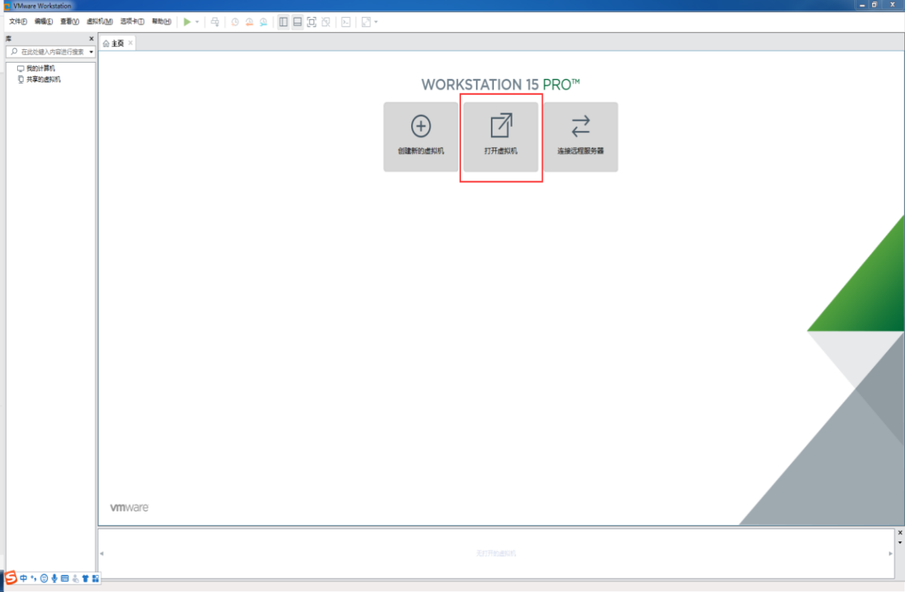
Navigate to the directory where the recently extracted OKMX8MPQ-C-Linux5.4.70-VM15.1.0-ubuntu18.04 virtual machine file is located, and double-click on the startup file to open it：

After loading, click to start the virtual machine to run. Enter the system’s interface.
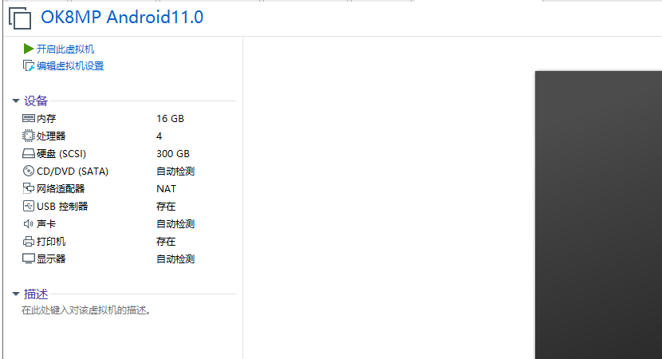
The provided development environment account is: forlinx and the password is: forlinx, fill in the password and select Sign in to log in.

So far, the development environment provided by Forlinx has been successfully entered, and you can put the source code in the user information folder into the development environment to start compiling and other operations（See 4. Linux Compilation).
3. Building the Development Environment Manually
Ubuntu is a Linux operating system distribution primarily focused on desktop applications. Ubuntu has many advantages and offers its own strengths compared to other Linux distributions. First of all, the installation system is very simple, only very few settings are needed, which can be completely comparable to the Windows desktop system. Secondly, the graphical interface is very user-friendly, imitating the commonly used shortcut keys under XP; in addition, when installing and upgrading programs, the system can install the dependent file packages by itself through the network, so it is no longer necessary to worry about the dependencies of the Linux system. Considering everyone’s usage habits and learning needs, it would be a good choice to use Ubuntu Linux.
There are numerous versions of Linux desktop systems, and currently, all the Linux experiments and source code in this manual are performed on the Ubuntu 18.04 system. With other versions of Linux desktop systems, problems related to the gcc compiler and library files may occur. If you encounter similar issues, you can seek advice and inquire on the official forums of the Linux distribution vendor. If you are not familiar with Linux, the method introduced by Forlinx is highly recommended.
Why do we need to install these things? Because a Linux environment is needed to do development work. The Kernel source code, Qt applications, uboot and so on can’t be compiled under Windows. These tasks need to be carried out in a Linux environment. Given that most users are accustomed to the Windows environment, VMware software is used to provide Ubuntu virtual machines. Of course, you can also install Linux on your computer or server for development.
Next, the process of building the virtual machine will be introduced.
Note:
Beginners are not recommended to set up a system on their own. It is recommended to use an existing virtual machine environment. If you do not need to set up the environment, you can skip this section;
The Ubuntu version requires the use of 18.04. Using other versions may lead to the loss of some libraries in the Android use phase. If this phenomenon occurs, we need to study the migration of libraries;
Recommended computer configuration Processor: Core (TM) i7 Memory: 32G or more; virtual machine hard disk 300G or more, memory 16G or more.
3.1 Ubuntu System Virtual Machine Installation
The version of Ubuntu chosen to install is 18.04, and the introduction and development in this manual are all carried out on Ubuntu 18.04. First, go to the Ubuntu official website to get the Ubuntu 18.04 64 bit image. The download address is https://releases.ubuntu.com/18.04/.
Download “Ubuntu-18.04.6-desktop-amd64.iso” (you can download the version that you actually need; this is just an example with 18.04.6).

3.1.1 Vmware Ubuntu Image Installation
If users want to learn to build their own virtual machines, they can choose to install new virtual machines. However, if you don’t have a need for this, we recommend downloading the virtual machine we built to save time and avoid problems, as building a virtual machine is tedious and time-consuming.
Step 1: Open the VMware software and click on “Create New Virtual Machine”. Enter the following interface, check “Customize (Advanced)” and click “Next”:

Step 2: Select the compatibility of the corresponding VMware version. The version can be viewed in Help-> About VMware Workstation. Click “Next” after confirmation:

Select “Install program from disc image file”, then click “Next”；
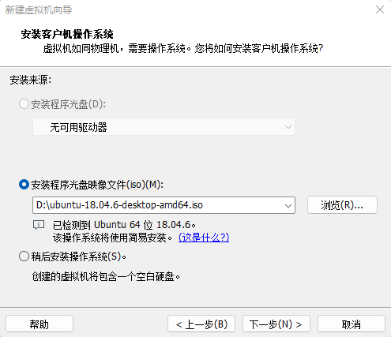
Enter full name, user name and password and click “Next”:
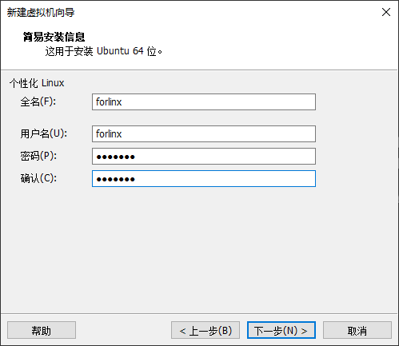
Enter the virtual machine name and configuration installation location, and click “Next”:

To configure the number of cores, click “Next”:
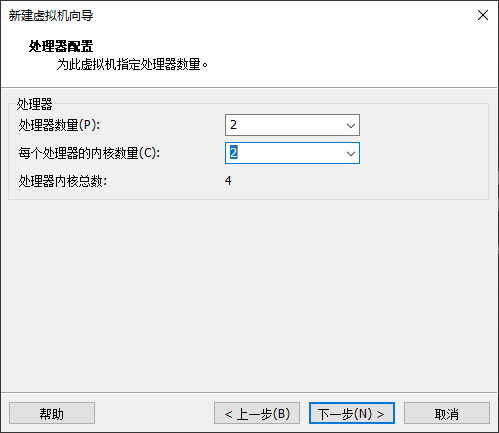
Configure appropriate memory space and select “Next”:

Set the network type, use the default NAT form for networking, and click “Next”. Keep the default values for the remaining steps until you reach the step to specify the disk capacity.

Using the recommended I/O controller, click “Next”:

Using the recommended disk type, click “Next”:

Using the default options, create a new virtual disk and click “Next”:

Allocate a disk size of 300G and divide the virtual disk into multiple files, and click “Next”:
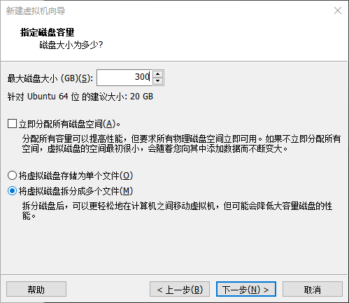
Click “Next” by default:
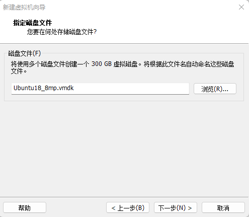
Click “Finish”:

After that, the virtual machine starts to install the image and wait patiently.
3.1.2 Solutions to VMware Error Reporting
Error 1: Unable to connect to MKS: Too many socket connection attempts; giving up.

Solution: Right click on my computer to manage services and application services, and turn on all services related to VMware. After the service has started successfully, restart the virtual machine; or hang the virtual machine first, wait for it to start, and then continue to run the hung virtual machine.

Error 2: Internal error.

Solution: Refer to error 1.
Error 3: Unable to install service VMware Authorization Service (VMAuthdService):

Solution:
win+R
Input services.msc

Then find the service and start it up as an authorization and authentication service for starting and accessing virtual machines.

WMI must start first.
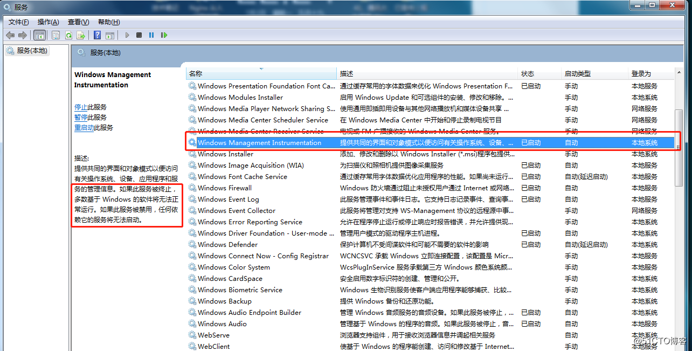
Error 4: Failed to install the hcmon driver
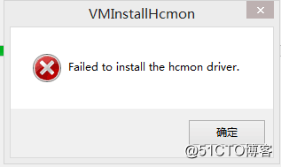
Solution: Delete C:\Windows\System32\drivers\hcmon.sys, then install again.
Error 5: Intel VT-x is disabled

Solution:
Enter the BIOS interface (F2 or F12) when booting;
Configuration – > intel virtual technology – > Change disabled to enabled – > Save the settings, exit and restart;
Reopen VMware and start the virtual machine.
If that doesn’t work, just turn the firewall off and reopen the VM. (varies by machine)
Error 6: The virtual machine appears to be in use… Acquiring Ownership (T)
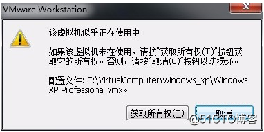
Solution:
Shut down the virtual machine;
Enter the storage directory of the virtual machine and delete the *.lck file. The lck represents the locked file;
Open the Windows Task Manager and kill the VMware process.
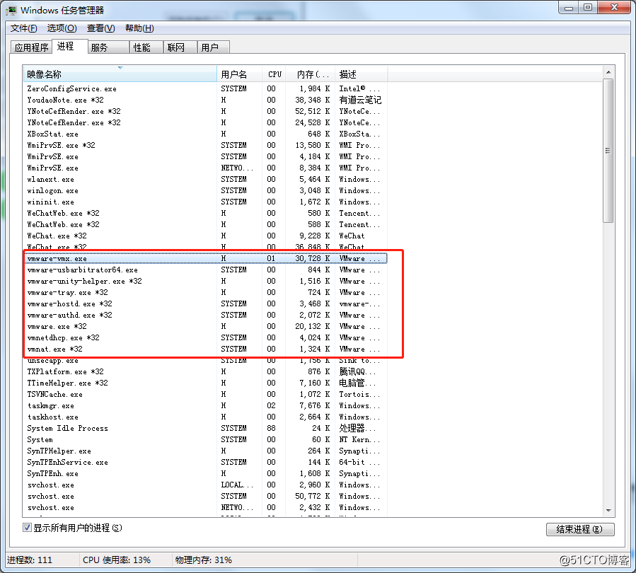
Restart the virtual machine.
Error 7: Failed to lock file

Solution:
Enter the storage directory of the virtual machine;
Delete. Vmem. Lck. Vmdk. Lck, *. Vmx. Lck;
Reopen the virtual machine to enter the virtual machine normally.
Error 8：The virtual machine could not be started because there was not enough memory available on the host.
Solution:
The virtual machine does not have enough memory to run the image’s maximum requirements； increase the virtual machine’s memory and reboot the virtual machine

3.2 Ubuntu Common Software Installation
3.2.1 VScode
Click the icon similar to a package on the left side of the desktop to see some tools. We can also search for the tools we want. For example, we download a VScode tool, which is very convenient for our daily coding.

Please search for the tool we need, click in to view details, click install to download, wait for the download to complete automatic installation, and then click “Launch” to run it.


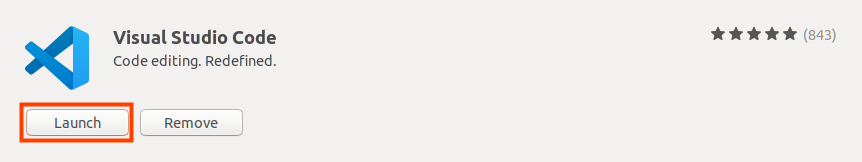
4. Android Compilation
Versions :
Development environment OS: Ubuntu18.04 64-bit version
Cross tool chain: aarch64-poky-linux-gcc
Bootloader of Development board: u-boot 2020.04
Development board kernel: Android 11.0
4.1 Ubuntu 18.04 x 64bit and Compilation Environment Installation
It is recommended to use Ubuntu virtual machine to compile. We provide Android 11.0 code compiled and tested under Ubuntu 18.04 64-bit system. In addition, the company’s network disk provides a virtual machine with library files and compilers as a reference.
Note: Recommended computer configuration processor: Core (TM) i7 Memory: 32G; virtual machine hard disk 300G or more, memory 16G or more.
4.2 Installation of the Library Needed to Compile Android
Android compilation requires the installation of several toolkits. Make sure that your computer or virtual machine can be connected to the Internet normally before the operation in this section. If the network is disconnected during the installation, please follow the following steps to install.
Install and compile the necessary packages for Android.
forlinx@ubuntu:~$ sudo add-apt-repository ppa:openjdk-r/ppa
[sudo] password for forlinx: //Enter password forlinx, no display
More info: https://launchpad.net/~openjdk-r/+archive/ubuntu/ppa
Press [ENTER] to continue or ctrl-c to cancel adding it
//Press enter to continue and ctrl C to exit
gpg: keyring `/tmp/tmpgkgmg6e4/secring.gpg' created
gpg: keyring `/tmp/tmpgkgmg6e4/pubring.gpg' created
gpg: requesting key 86F44E2A from hkp server keyserver.ubuntu.com
gpg: /tmp/tmpgkgmg6e4/trustdb.gpg: trustdb created
gpg: key 86F44E2A: public key "Launchpad OpenJDK builds (all archs)" imported
gpg: Total number processed: 1
gpg: imported: 1 (RSA: 1)
OK
forlinx@ubuntu:~$ sudo apt-get update
Hit:1 http://ppa.launchpad.net/openjdk-r/ppa/ubuntu xenial InRelease
Hit:2 http://us.archive.ubuntu.com/ubuntu xenial InRelease
Get:3 http://security.ubuntu.com/ubuntu xenial-security InRelease [99.8 kB]
Get:4 http://us.archive.ubuntu.com/ubuntu xenial-updates InRelease [99.8 kB]
Get:5 http://us.archive.ubuntu.com/ubuntu xenial-backports InRelease [97.4 kB]
Get:6 http://us.archive.ubuntu.com/ubuntu xenial-updates/main amd64 DEP-11 Metadata [327 kB]
Get:7 http://us.archive.ubuntu.com/ubuntu xenial-updates/universe amd64 DEP-11 Metadata [281 kB]
Get:8 http://us.archive.ubuntu.com/ubuntu xenial-updates/multiverse amd64 DEP-11 Metadata [5,964 B]
Get:9 http://us.archive.ubuntu.com/ubuntu xenial-backports/main amd64 DEP-11 Metadata [3,332 B]
Get:10 http://us.archive.ubuntu.com/ubuntu xenial-backports/universe amd64 DEP-11 Metadata [6,604 B]
Get:11 http://security.ubuntu.com/ubuntu xenial-security/main amd64 DEP-11 Metadata [93.9 kB]
Get:12 http://security.ubuntu.com/ubuntu xenial-security/universe amd64 DEP-11 Metadata [130 kB]
Get:13 http://security.ubuntu.com/ubuntu xenial-security/multiverse amd64 DEP-11 Metadata [2,464 B]
Fetched 1,147 kB in 13s (83.3 kB/s)
Reading package lists... Done
forlinx@ubuntu:~$ sudo apt-get install openjdk-8-jdk
uilding dependency tree
Reading state information... Done
The following additional packages will be installed:
ca-certificates-java fonts-dejavu-extra libatk-wrapper-java libatk-wrapper-java-jni libgif7 libice-dev libpthread-stubs0-dev libsm-dev libx11-dev libx11-doc libxau-dev
libxcb1-dev libxdmcp-dev libxt-dev openjdk-8-jdk-headless openjdk-8-jre openjdk-8-jre-headless x11proto-core-dev x11proto-dev xorg-sgml-doctools xtrans-dev
Suggested packages:
libice-doc libsm-doc libxcb-doc libxt-doc openjdk-8-demo openjdk-8-source visualvm fonts-ipafont-gothic fonts-ipafont-mincho fonts-wqy-microhei fonts-wqy-zenhei
The following NEW packages will be installed:
ca-certificates-java fonts-dejavu-extra libatk-wrapper-java libatk-wrapper-java-jni libgif7 libice-dev libpthread-stubs0-dev libsm-dev libx11-dev libx11-doc libxau-dev
libxcb1-dev libxdmcp-dev libxt-dev openjdk-8-jdk openjdk-8-jdk-headless openjdk-8-jre openjdk-8-jre-headless x11proto-core-dev x11proto-dev xorg-sgml-doctools xtrans-dev
0 upgraded, 22 newly installed, 0 to remove and 6 not upgraded.
Need to get 46.4 MB of archives.
After this operation, 173 MB of additional disk space will be used.
Do you want to continue? [Y/n] y
[…]
forlinx@ubuntu:~$ sudo apt-get install uuid uuid-dev zlib1g-dev liblz-dev liblzo2-2 liblzo2-dev lzop git-core curl u-boot-tools mtd-utils android-tools-fsutils device-tree-compiler gdisk m4 libz-dev bison flex make libssl-dev gcc-multilib
Reading package lists... Done
Building dependency tree
Reading state information... Done
[…]
The following packages will be upgraded:
libuuid1 uuid-dev
2 upgraded, 0 newly installed, 0 to remove and 87 not upgraded.
Need to get 41.0 kB of archives.
After this operation, 2,048 B of additional disk space will be used.
Do you want to continue? [Y/n] Y
[…]
Switch to the JDK version
If you have previously installed another version of the JDK, you will need to switch versions.
To view the installed version:
forlinx@ubuntu:~$ update-java-alternatives -l
java-1.8.0-openjdk-amd64 1081 /usr/lib/jvm/java-1.8.0-openjdk-amd64
forlinx@ubuntu:~$ sudo update-alternatives --config java
There is only one alternative in link group java (providing /usr/bin/java): /usr/lib/jvm/java-8-openjdk-amd64/jre/bin/java
Nothing to configure.
For example, there is only one version of the above print information, which can be used directly. If there are multiple versions, enter the second command, select the option corresponding to java8, and press Enter to confirm.
4.3 Android System Compilation
4.3.1 Preparation Before Compilation
Please confirm the size of the swap partition of the current system. If the swap partition is insufficient, the compilation of the Android source code will fail. The recommended size is 4G;
Confirm the swap partition：
forlinx@ubuntu:~$ cat /proc/swaps
Filename Type Size Used Priority
/dev/sda5 partition 8387580 0 -2
For reference, here is a way to increase the size of a swap partition by creating a swap file:
forlinx@ubuntu:~$ sudo fallocate -l 4G /swapfile
[sudo] password for forlinx: //Enter password forlinx,no display
If an error is reported during the above operation: fallocate: fallocate failed: Text file busy
The follow operations are perform:
forlinx@ubuntu:~$ sudo swapoff -a
forlinx@ubuntu:~$ sudo fallocate -l 4G /swapfile
Execute the following command to set the correct permissions for the swapfile file:
forlinx@ubuntu:~$ sudo chmod 600 /swapfile
Use the mkswap utility to set up a Linux SWAP zone on a file:
forlinx@ubuntu:~$ sudo mkswap /swapfile
mkswap: /swapfile: warning: wiping old swap signature.
Setting up swapspace version 1, size = 4 GiB (4294963200 bytes)
no label, UUID=a40195d9-42c0-441a-8d8e-900115b9ad3b
To activate a swap file:
forlinx@ubuntu:~$ sudo swapon /swapfile
To make the created swap partition permanent, the swapfile path contents can be written to /etc/[fstab](https://so.csdn.net/so/search?q=fstab&spm=1001.2101.3001.7020” \t “https://blog.csdn.net/mucheni/article/details/_blank) in a file.
Add the following at the end of the/etc/fstab file:/swapfile none swap sw 0 0
forlinx@ubuntu:~$ sudo vi /etc/fstab
[…]
/dev/fd0 /media/floppy0 auto rw,user,noauto,exec,utf8 0 0
/swapfile none swap sw 0 0
Check the current partition after the modification is completed:
forlinx@ubuntu:~$ cat /proc/swaps
Filename Type Size Used Priority
/dev/sda5 partition 8387580 0 -2
/swapfile file 4194300 0 -3
Put the source code into the development environment and unzip it.
Path: OKMX8MP-C (Android) User Profile\Android\Source Code\OKMX8MP-android-source.tar.bz2_xa*
Copy the source code package to the Ubuntu folder/home/forlinx/imx8mp/, and check the md5 code of the source code package:
forlinx@ubuntu:~$ cd /home/forlinx/imx8mp
forlinx@ubuntu:~/imx8mp$ md5sum OK8MP-android-source.tar.bz2_a*
c59eea85c601c3e4a0c6c6e131a55d0c OK8MP-android-source.tar.bz2_aa
4c00d1d2d1c0d0e1e3dc26659c294f17 OK8MP-android-source.tar.bz2_ab
6b7969ae7372fbcc231ab8ecefd1e262 OK8MP-android-source.tar.bz2_ac
07f6a8a6a549d907e5285be41d300813 OK8MP-android-source.tar.bz2_ad
5c30fb7d2dc51bf1ddb434887eb5306a OK8MP-android-source.tar.bz2_ae
3339dadb910de24d261825e49ceaa17c OK8MP-android-source.tar.bz2_af
012af931f240da8a716d9ad252b09891 OK8MP-android-source.tar.bz2_ag
8bc7a12e14b62ee25b533c03bfb53876 OK8MP-android-source.tar.bz2_ah
3e34eddd412167c4ef70e0eebf3c009a OK8MP-android-source.tar.bz2_ai
9eec886b83c8d830bfbd08f3e40a1dbd OK8MP-android-source.tar.bz2_aj
3eec33dc40d1ea8f57a4f201f4a15b2e OK8MP-android-source.tar.bz2_ak
773969dbf7ef53c5a4208eb29a3db092 OK8MP-android-source.tar.bz2_al
Note: The source code used here is the source code in the “11/02/2022” version data. The md5 code of the source code in different versions may be different. For details, please refer to “user data/Android/source code/md5sum.txt”.
Compare the md5 code with the md5 check code in the “User Profile/Android/Source Code” directory, after confirming that they are the same, merge them into a zip file and check the md5 code:
forlinx@ubuntu:~/imx8mp$ cat OK8MP-android-source.tar.bz2_a* > OK8MP-android-source.tar.bz2 //Merging takes a long time, so please be patient
forlinx@ubuntu:~/imx8mp$ md5sum OK8MP-android-source.tar.bz2
94907c99c44e7a17fefd1a472f0519e0 OK8MP-android-source.tar.bz2
After following the above steps to confirm that the md5 code is fine, unpack the Android source code with the following command:
forlinx@ubuntu:~/imx8mp$ tar xvf OK8MP-android-source.tar.bz2
OK8MP-android-source/
OK8MP-android-source/development/
OK8MP-android-source/development/testrunner/
OK8MP-android-source/development/testrunner/coverage_targets.xml
[…]
OK8MP-android-source/pdk/util/
OK8MP-android-source/pdk/util/diff_products.py
forlinx@ubuntu:~/imx8mp$
4.3.2 Compiling Android File System
Configure compilation environment
Compile Android 9.0 into this directory and execute the following command:
forlinx@ubuntu:~/imx8mp$ cd /home/forlinx/imx8mp/OK8MP-android-source
forlinx@ubuntu:~/imx8mp/OK8MP-android-source$ source env.sh
forlinx@ubuntu:~/imx8mp/OK8MP-android-source$ source build/envsetup.sh
forlinx@ubuntu:~/imx8mp/OK8MP-android-source$ lunch evk_8mp-userdebug
============================================
PLATFORM_VERSION_CODENAME=REL
PLATFORM_VERSION=11
TARGET_PRODUCT=evk_8mp
TARGET_BUILD_VARIANT=userdebug
TARGET_BUILD_TYPE=release
TARGET_ARCH=arm64
TARGET_ARCH_VARIANT=armv8-a
TARGET_CPU_VARIANT=cortex-a53
TARGET_2ND_ARCH=arm
TARGET_2ND_ARCH_VARIANT=armv7-a-neon
TARGET_2ND_CPU_VARIANT=cortex-a9
HOST_ARCH=x86_64
HOST_2ND_ARCH=x86
HOST_OS=linux
HOST_OS_EXTRA=Linux-5.3.0-28-generic-x86_64-Ubuntu-18.04.4-LTS
HOST_CROSS_OS=windows
HOST_CROSS_ARCH=x86
HOST_CROSS_2ND_ARCH=x86_64
HOST_BUILD_TYPE=release
BUILD_ID=RQ1A.201205.003
OUT_DIR=out
PRODUCT_SOONG_NAMESPACES=device/generic/goldfish device/generic/goldfish-opengl external/mesa3d vendor/nxp-opensource/imx/power hardware/google/pixel vendor/partner_gms hardware/google/camera vendor/nxp-opensource/imx/camera
============================================
forlinx@ubuntu:~/imx8mp/8MP-android-source$
Full compilation
forlinx@ubuntu:~/imx8mpOK8MPandroid-source$ ./imx-make.sh
============================================
PLATFORM_VERSION_CODENAME=REL
PLATFORM_VERSION=11
TARGET_PRODUCT=evk_8mp
TARGET_BUILD_VARIANT=userdebug
TARGET_BUILD_TYPE=release
TARGET_ARCH=arm64
TARGET_ARCH_VARIANT=armv8-a
TARGET_CPU_VARIANT=cortex-a53
TARGET_2ND_ARCH=arm
TARGET_2ND_ARCH_VARIANT=armv7-a-neon
TARGET_2ND_CPU_VARIANT=cortex-a9
HOST_ARCH=x86_64
HOST_2ND_ARCH=x86
HOST_OS=linux
HOST_OS_EXTRA=Linux-5.3.0-28-generic-x86_64-Ubuntu-18.04.4-LTS
HOST_CROSS_OS=windows
HOST_CROSS_ARCH=x86
HOST_CROSS_2ND_ARCH=x86_64
HOST_BUILD_TYPE=release
BUILD_ID=RQ1A.201205.003
OUT_DIR=out
PRODUCT_SOONG_NAMESPACES=device/generic/goldfish device/generic/goldfish-opengl external/mesa3d vendor/nxp-opensource/imx/power hardware/google/pixel vendor/partner_gms hardware/google/camera vendor/nxp-opensource/imx/camera
============================================
[…]
lpmake I 08-15 22:07:23 518 518 builder.cpp:1031] [liblp]Partition product_a will resize from 0 bytes to 227995648 bytes
2022-08-15 22:15:37 - build_super_image.py - INFO : Done writing image out/target/product/evk_8mp/super.img
#### build completed successfully (06:40:17 (hh:mm:ss)) ####
Because the android system is too large, the compilation time is slightly longer, please wait patiently for the completion of the compilation.
After the compilation is complete, execute the command./vendor/pack_images.sh under the current path, you can generate a uuu folder under OK8MP-android-source/out/target/product/evk_8mp/, which is the image file used for uuu flashing.
The image generated after compilation are located in the OK8MP-android-source/out/target/product/evk_8mp/uuu.
Describe the files in uuu:
File |
Description |
|---|---|
boot.img |
boot.img contains two parts, kernel and ramdisk. It is the file that must be loaded when the Android system starts. |
dtbo-imx8mp.img |
Device tree file |
partition-table.img |
Android disc partition image |
vbmeta-imx8mp.img |
Verify the boot image for security verification is an important security feature of Android. |
vendor_boot.img |
Include all binaries that are not distributable to the Android Open Source Project. |
u-boot-imx8mpevk-uuu.imx |
Uboot image. Since the uboot source code in the 8mp source code is not open source, it will not be generated during the compilation process. When flashing, you need to put the two files under “User Data \ Android \ Image \ uuu” into the uuu folder. |
u-boot-imx8mp.imx |
|
logo.img |
Image of boot logo. |
super.img |
Responsible for configuring dynamic partitions. |
uuu_imx_android_flash.sh |
Flashing tool |
uuu_imx_android_flash.bat |
Note:
You have to compile all of them before you can use individual compilation, and as long as you don’t clean after compiling all of them, the compilation after that will take a lot less time.
If the first full compilation is terminated in advance or an error is reported, the recompilation will report an error. At this time, you need to clean first and then compile. The complete command is:make clean.
Compile separately boot.img
forlinx@ubuntu:~/imx8mp/OK8MP-android-source$ ./imx-make.sh bootimage
============================================
PLATFORM_VERSION_CODENAME=REL
PLATFORM_VERSION=11
TARGET_PRODUCT=evk_8mp
TARGET_BUILD_VARIANT=userdebug
TARGET_BUILD_TYPE=release
TARGET_ARCH=arm64
TARGET_ARCH_VARIANT=armv8-a
TARGET_CPU_VARIANT=cortex-a53
TARGET_2ND_ARCH=arm
TARGET_2ND_ARCH_VARIANT=armv7-a-neon
TARGET_2ND_CPU_VARIANT=cortex-a9
HOST_ARCH=x86_64
HOST_2ND_ARCH=x86
HOST_OS=linux
HOST_OS_EXTRA=Linux-5.4.0-113-generic-x86_64-Ubuntu-18.04.4-LTS
HOST_CROSS_OS=windows
HOST_CROSS_ARCH=x86
HOST_CROSS_2ND_ARCH=x86_64
HOST_BUILD_TYPE=release
BUILD_ID=RQ1A.201205.003
OUT_DIR=out
PRODUCT_SOONG_NAMESPACES=device/generic/goldfish device/generic/goldfish-opengl external/mesa3d vendor/nxp-opensource/imx/power hardware/google/pixel vendor/partner_gms hardware/google/camera vendor/nxp-opensource/imx/camera
============================================
[…]
[100% 731/731] Target boot image from recovery: out/target/product/evk_8mp/boot.img
//Path to the image generated by the compilation
#### build completed successfully (27 seconds) ####
Compile the device tree separately
forlinx@ubuntu:~/imx8mm/OK8MM-android-source$ make dtboimage -j8
============================================
PLATFORM_VERSION_CODENAME=REL
PLATFORM_VERSION=11
TARGET_PRODUCT=evk_8mp
TARGET_BUILD_VARIANT=userdebug
TARGET_BUILD_TYPE=release
TARGET_ARCH=arm64
TARGET_ARCH_VARIANT=armv8-a
TARGET_CPU_VARIANT=cortex-a53
TARGET_2ND_ARCH=arm
TARGET_2ND_ARCH_VARIANT=armv7-a-neon
TARGET_2ND_CPU_VARIANT=cortex-a9
HOST_ARCH=x86_64
HOST_2ND_ARCH=x86
HOST_OS=linux
HOST_OS_EXTRA=Linux-5.4.0-113-generic-x86_64-Ubuntu-18.04.4-LTS
HOST_CROSS_OS=windows
HOST_CROSS_ARCH=x86
HOST_CROSS_2ND_ARCH=x86_64
HOST_BUILD_TYPE=release
BUILD_ID=RQ1A.201205.003
OUT_DIR=out
PRODUCT_SOONG_NAMESPACES=device/generic/goldfish device/generic/goldfish-opengl external/mesa3d vendor/nxp-opensource/imx/power hardware/google/pixel vendor/partner_gms hardware/google/camera vendor/nxp-opensource/imx/camera
============================================
[…]
create image file: out/target/product/evk_8mp/dtbo-imx8mp.img... //Path to the image generated by the compilation
Total 1 entries.
#### build completed successfully (03:59 (mm:ss)) ####
5. Android Application Development
5.1 Android Application Development Environment Setup
5.1.1 JDK Download and Installation
Since the Android application code is written in Java, you need to install the JDK on Windows first. The JDK can be downloaded as follows:
Visit http://www.oracle.com/technetwork/java/javase/downloads/index.html.
Click java archive：

Click java SE（8u211 and later）：
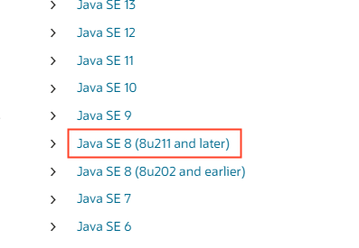
Select the red box.
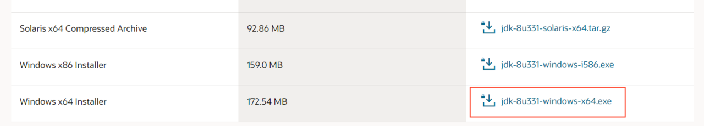
According to the prompt, register the account and download it normally.
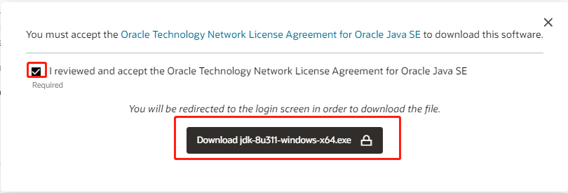
After the download is completed, double-click the installer to complete the installation according to the wizard’s prompts.
To check for a successful installation, open the command prompt tool and type Java -version.

The correct display of the Java version indicates a successful installation.
5.1.2 Android Studio Installation
Android Studio is a new development tool for Android development launched by Google at the 2013 I/O conference. It can be downloaded and installed at: http://www.android-studio.org/.
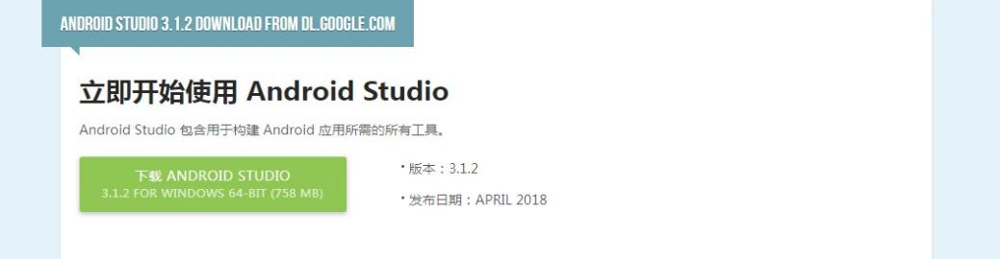
After downloading, follow the prompts to install it. When the installation is complete, the following figure appears:
Select “Do not import settings “:

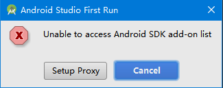
Select “Cancel “:
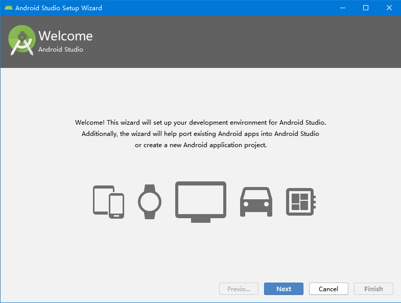
Click “Next” to go to the next step:

Select “Custom” here:

Choose a UI theme based on your personal preference:
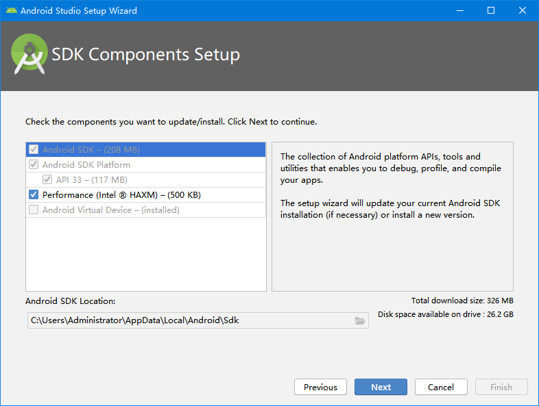
Select the installation path of Android SDK according to the actual situation:

Select the memory size for the emulator:
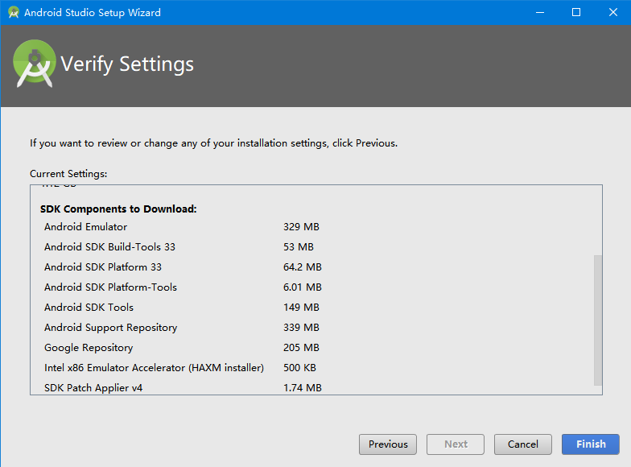
Click “Finish”.
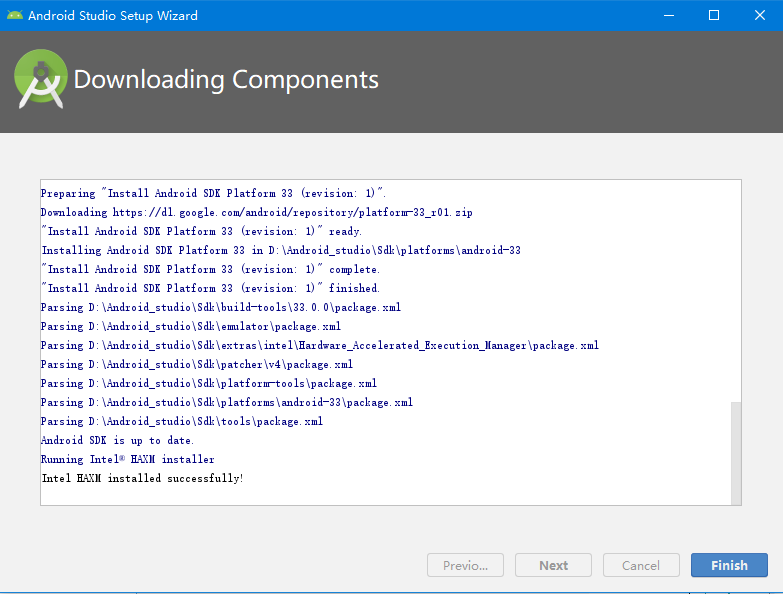
When the installation is complete, click “Finish”.
5.1.3 Helloworld Project Creation
Select “start a new android studio project”：
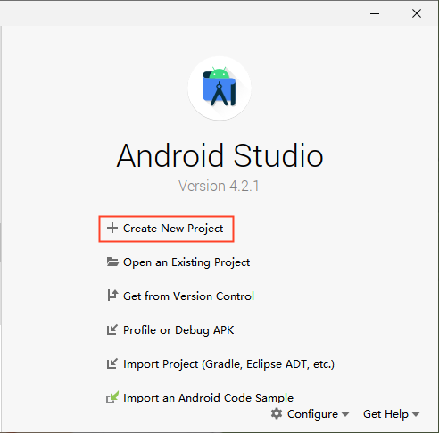
2. Modify the project name, select Empty Activity, click “Next”, and select the lowest supported SDK version:
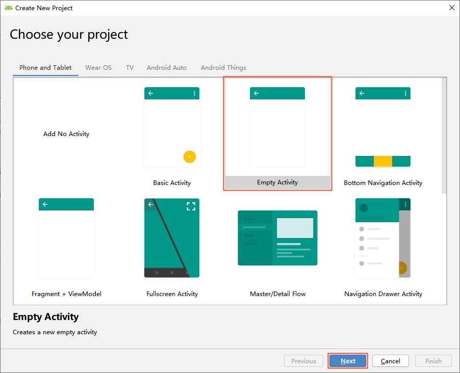

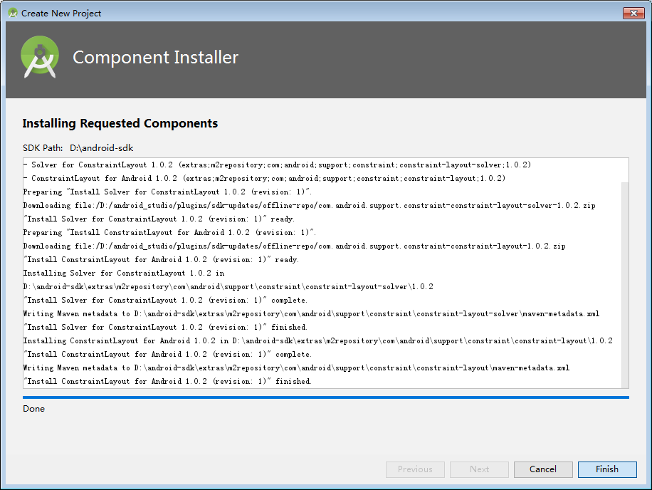
Click “Finish”.

Tools such as Gradle will be downloaded for the first use, so please be patient.
3. Install android 11.0 SDK
Click “File”-> “settings” to search the SDK and open the interface as shown in the figure below. Check “Android 11.0” and click “OK” to install:

After the flashing is completed, click “Finish”:
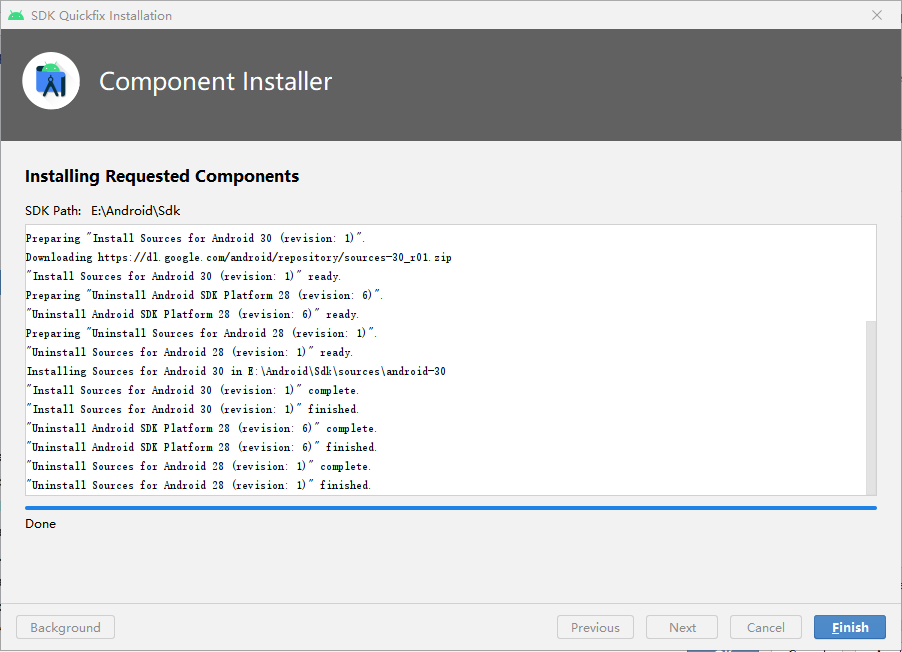
4. Click “build”-> “Make Project” to compile:
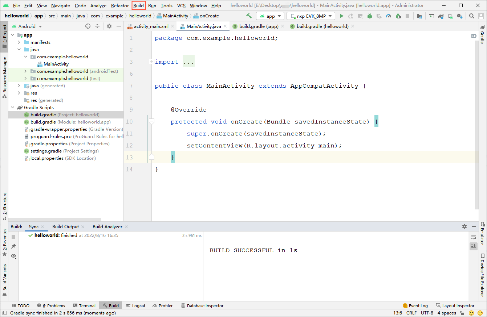
5. After compiling, use the OTG cable to connect the development board to the computer and start the development board. In the Android studio menu bar, select Device 8mp:
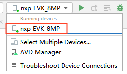
Click the green triangle icon in the menu bar to run the application on the development board.
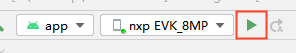
After a while, the program runs on the development board:

5.1.4 Existing App Project Compilation
This section mainly introduces how to import and compile the existing App project source code, taking CanTest as an example.
5.1.4.1 Compiling CanTest Application
Path: OKMX8MPQ-C (Android) User Profile \Android\Test Program\SerialPortTest.rar
First, decompress the source code of the test program provided by Forlinx to the full English path. Otherwise, it will compile and report errors. You can see the contents of CanTest as follows:
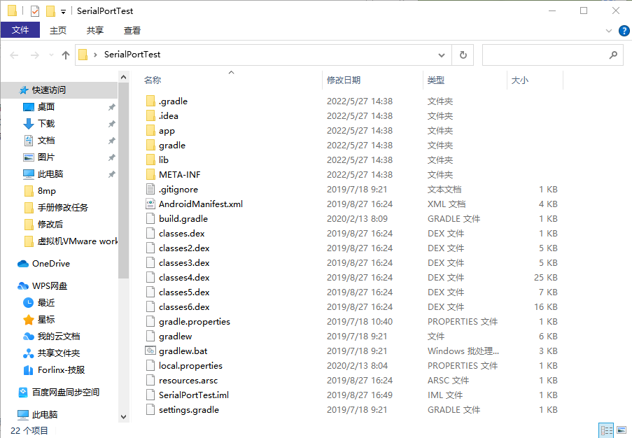
Select “Open an existing Android Studio project” “in Android studio, select the CanTest extracted in the previous step, and click” OK “;

Click “build”-> “Make Project” to compile:
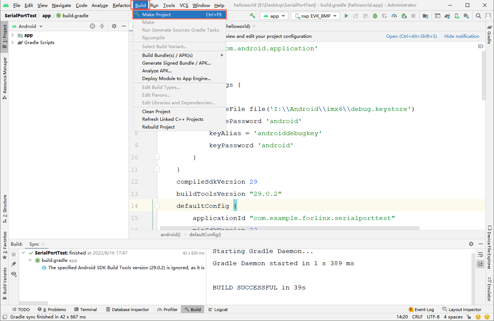
After compiling, use the OTG cable to connect the development board to the computer and start the development board. In the Android studio menu bar, select Device 8mp:

Click the green triangle icon in the menu bar to run the application on the development board.

After a while, the program runs on the development board:

The test was successful and the generated APK path: app\build\outputs\apk\debug\app-debug.apk
The .apk file can be copied to the development board for installation.
5.1.4.2 Common Issues
Problem 1: The following errors may occur during compilation:

The reason is that the APK signature is added to the opened source code by default, and the prompt is that the signature file cannot be found. At this time, you need to create your own signature file according to Section 5.2.
Specific operation: File-> Project Structure-> Modules-> app-> Signing Configs-> Store File, modify the path to your signature file path, and then click “OK”:

Problem 2: How to open the project in different versions of Android studio:
Creating a new project according to “Chapter 5.1.3 Creating HelloWorld Project”;
Unzip the “app” directory from the source code into the new project path, replacing the existing “app” folder;
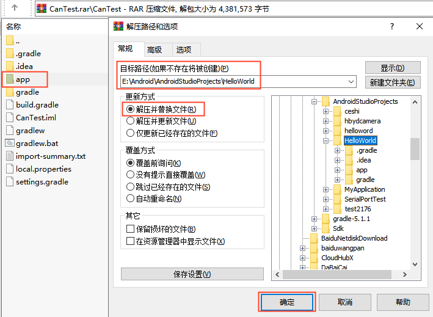
Reopen the HelloWorld project after replacing the app directory. After loading, change the APK key (see Problem 1 above for the operation process) and compile it;
After successful compilation, connect the development board and computer with an OTG cable, run it on the development board, and you can now successfully run it.
Problem 3: The development board is connected to the computer via an OTG cable, and the development board is on, but Android Studio cannot detect the device.
Check whether the development board has been set to USB debugging mode (first click the version number crazily to enter the developer mode, and then start USB debugging in the developer options), and click run in Android studio to start debugging.
5.2 Apk Platform Signature
In the Android platform, SELinux divides apps into three types, including untrusted_app which has no platform signature and system privileges, platform_app which has platform signature and no system privileges, and system_app which has platform signature and system privileges. This chapter will introduce how to sign the apk and obtain system permissions.
5.2.1 Preparation of Signature Document
Copy device/fsl/common/security/platform.x509.pem and device/fsl/common/security/platform.pk8 from Android to windows.
Open the command line window and enter the folder directory to execute:
openssl pkcs8 -in platform.pk8 -inform DER -outform PEM -out shared.priv.pem -nocrypt
openssl pkcs12 -export -in platform.x509.pem -inkey shared.priv.pem -out shared.pk12 -name androiddebugkey
Enter the password twice
keytool -importkeystore -deststorepass 123456 -destkeypass 123456 -destkeystore debug.keystore -srckeystore shared.pk12 -srcstoretype PKCS12 -srcstorepass android -alias androiddebugkey
The android is the password you enter, and the android debugkey is the alias, which you can modify to other contents according to your needs. 123456 for Store Password and Key Password, save the signature debug.keystore file to your usual directory.
**If you do not have the openssl command in your Windows system, please go to **http://slproweb.com/products/Win32OpenSSL.html to download and install it, then set the environment variable (please search online for instructions).

5.2.2 Setting up Andorid Studio
Open any android studio project, and add the shared UID at the corresponding position in the AndroidManifest.xml, for example:
<manifest xmlns:android=”http://schemas.android.com/apk/res/android”
package="com.example.forlinx.serialporttest"
android: sharedUserId=”android.uid.system” >
Click “File”->“project structure”：
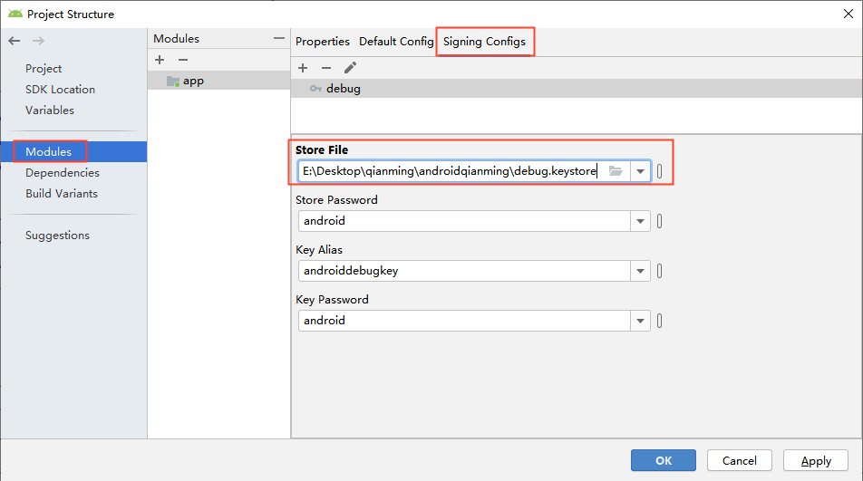
Create a new release:

Add signature configuration of debug version and release version, and click build Variants “:


Set the signature configuration of the corresponding version as shown in the figure.
Click the run button on android studio to launch the app. Enter ps-Z in the serial port:
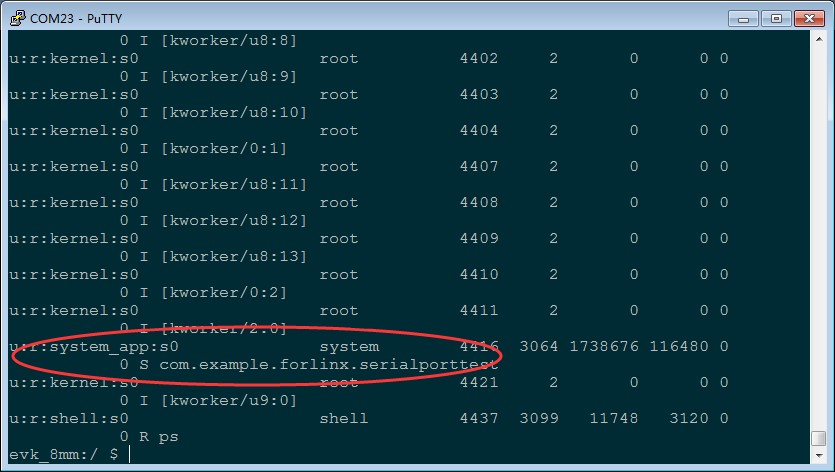
Confirm whether your app has become system _ app.
5.3 Method of System Pre-installation of APK
1. Create a new directory in Android:
mkdir packages/apps/serialporttest
2. Copy the apk that needs to be pre-installed (no signature is required) to the directory. Take the serialporttest.apk as an example:
cp serialporttest.apk packages/apps/serialporttest
3. Create a new Android.mk in packages/apps/serialporttest and add the following:
LOCAL_PATH := $(call my-dir)
include $(CLEAR_VARS)
LOCAL_MODULE := serialporttest
LOCAL_SRC_FILES := serialporttest.apk
LOCAL_MODULE_CLASS := APPS
LOCAL_MODULE_SUFFIX := .apk
LOCAL_BUILT_MODULE_STEM := package.apk
LOCAL_CERTIFICATE := platform
LOCAL_DEX_PREOPT := false
LOCAL_PRIVILEGED_MODULE := true
include $(BUILD_PREBUILT)
4. Also modify device/nxp/imx8m/evk _ 8mp/evk _ 8mp.mk to add;
PRODUCT_PACKAGES += \
Serialporttest
5. Recompile the image.
6. System Flashing
6.1 Flashing the Image with UUU
UUU is a command-line tool that can be used to flash images onto the OKMX8MPQ development board in Linux or Windows environments. For the Android system, NXP provides integrated scripts for both Linux (uuu_imx_android_flash.sh) and Windows (uuu_imx_android_flash.bat) platforms.
Here are the instructions for using each of these two tools.
uuu_imx_android_flash parameter description:
Parameter |
Description |
|---|---|
-h |
help |
-f |
soc_name |
-a |
flash only slot _ a |
-b |
flash only slot _ b |
-c |
Default use partition-table. img |
-m |
Flash Cortex-M7 image |
-d |
Flash a specific dtbo vbmeta recovery image |
-e |
Erase the userdata partition after the write is complete. |
-l |
Lock the device after flashing is complete. |
-D |
Image path, use current path by default without specifying |
-s |
Serial port number, used when multiple devices are connected to the PC at the same times. |
The following describes the use of UUU tools under Linux and Windows respectively.
Note:
Do not use the uuu_imx_android_flash.sh generated by the android environment compiler. Please use “User Profile Tool \uuu_imx_android_flash.sh”;
Plug the OTG cable into the Linux host’s USB port If you use a virtual machine, mount the following devices in the virtual machine.

6.1.1 Use of the uuu_imx_android_flash.sh tool on Linux
Path: OKMX8MPQ-C (Android) User Profile \ Tool
Copy the uuu of the tool directory in the downloaded user profile to the/usr/bin/directory and add executable permissions. Copy uuu_imx_android_flash.sh to the /home/forlinx/imx8mp/uuu directory.
Note: Do not use the uuu_imx_android_flash.sh generated by the android environment compilation. Meanwhile, if the fastboot version is too low, the device cannot be identified. Please extract the tools such as the fastboot adb in the platform-tools _ r28.0.3- Linux. zip in the CD tool directory to the/usr/bin directory and add executable permissions.
Plug the type C cable into the USB port of the Linux host. If you are using a virtual machine, move the following devices to the virtual machine.

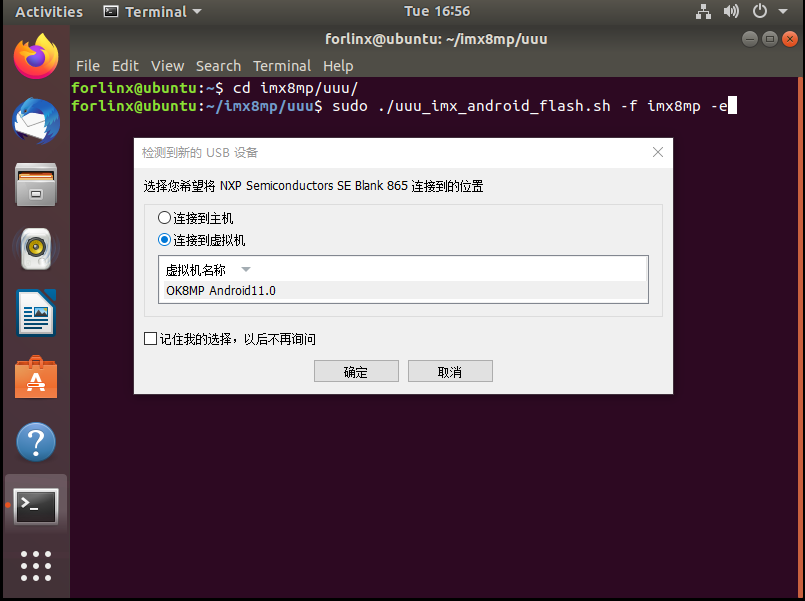
Copy the compiled image (. img and u-boot to the/home/forlinx/imx8mp/uuu directory.
Note:
Copy the compiled image (*.img and u-*) to the/home/forlinx/imx8mp/uuu directory. Where. img is a fully compiled generated file, because u-boot is not open source. Therefore, you need to copy the “u-boot-imx8mp.imx” and “u-boot-imx8mp-evk” uuu. Imx “under the” user information/Android/image/uuu/ “path to the/home/forlinx/imx8mp/uuu directory;
If the user has not compiled the source code and simply uses the image in the user profile to flash, you can directly copy the (*.img and u-boot *) under the path of “user profile/Android/image/uuu/” to the directory of/home/forlinx/imx8mp/uuu.
According to the schematic diagram, change the dial-up startup mode to USB, and start the development board;
Enter the following command to enter the corresponding path for programming.
forlinx@ubuntu: ~$ cd /home/forlinx/imx8mp/uuu
forlinx@ubuntu: ~/imx8mp/uuu$ sudo ./uuu_imx_android_flash.sh -f imx8mp -e
Note: Do not insert the TF card when flashing.
Once the flashing process begins, you will receive a prompt to connect the device to the host machine or virtual machine. Please actively select the option to connect it to the virtual machine.
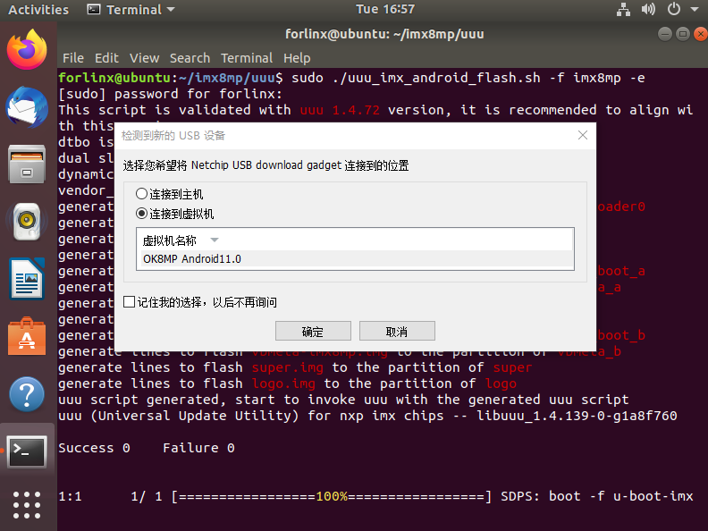
Wait for the flashing process to complete. A successful flashing operation will be indicated as shown in the following image:

6.1.2 Use of uuu_imx_android_flash.bat tool on Windows
Note: The command line window must be run with administrator privileges when flashing uuu.
Step 1: Copy file;
Path: OKMX8MPQ-C (Android) User Profile \ Tool\uuu.exe
Copy uuu.exe from the downloaded material to the C:\Windows\System32 directory.
Path: OKMX8MPQ-C (Android) User Profile\Tools\platform-tools_r28.0.3-windows.zip
Extract the platform-tools_r28.0.3-windows.zip file from the user profile tools directory to C:\Windows\System32, or to C:\Windows\SysWOW64 for 64-bit windows systems.
Step 2: Connect the USB interface of the host to the Type-C interface of the development board using an OTG cable, then set the dip switch to [specific setting], remove the TF card, and power on the development board;
Step 3: Check the installation.
By clicking on the start menu, type “cmd” in the search box at the bottom of the start menu, and press enter on cmd.exe to open the DOS window. In the DOS window, type “uuu” and press enter.
C:\Users\Administrator>uuu
uuu (Universal Update Utility) for nxp imx chips -- libuuu_1.4.139-0-g1a8f760
uuu [-d -m -v -V] <bootloader|cmdlists|cmd>
bootloader download bootloader to board by usb
cmdlist run all commands in cmdlist file
If it is path, search uuu.auto in dir
If it is zip, search uuu.auto in zip
cmd Run one command, use -H see detail
example: SDPS: boot -f flash.bin
-d Daemon mode, wait for forever.
-v -V verbose mode, -V enable libusb error\warning info
-m USBPATH Only monitor these paths.
-m 1:2 -m 1:3
[…]
Register-ArgumentCompleter -CommandName uuu -ScriptBlock {param($commandName,$parameterName,$wordToComplete,$commandAst,$fakeBoundParameter); C:\WINDOWS\system32\uuu.exe -autocomplete $parameterName }
Switch to the directory where the extracted files are located.
Microsoft Windows [Version 10.0.19044.1645]
(c) Microsoft Corporation.All rights reserved
C:\Users\Administrator>cd c:\
c:\>cd \Windows\System32\platform-tools
Enter fastboot -h Confirm whether the installation is successful.
c:\Windows\System32\platform-tools>fastboot -h
usage: fastboot [OPTION...] COMMAND...
flashing:
update ZIP Flash all partitions from an update.zip package.
flashall Flash all partitions from $ANDROID_PRODUCT_OUT.
On A/B devices, flashed slot is set as active.
Secondary images may be flashed to inactive slot.
flash PARTITION [FILENAME] Flash given partition, using the image from
$ANDROID_PRODUCT_OUT if no filename is given.
[…]
options:
[…]
--version Display version.
--help, -h Show this message.
Enter adb Confirm whether the installation is successful
c:\Windows\System32\platform-tools>adb
Android Debug Bridge version 1.0.41
Version 28.0.3-5475833
Installed as c:\Windows\System32\platform-tools\adb.exe
global options:
-a listen on all network interfaces, not just localhost
-d use USB device (error if multiple devices connected)
-e use TCP/IP device (error if multiple TCP/IP devices available)
-s SERIAL use device with given serial (overrides $ANDROID_SERIAL)
-t ID use device with given transport id
-H name of adb server host [default=localhost]
-P port of adb server [default=5037]
-L SOCKET listen on given socket for adb server [default=tcp:localhost:5037]
[…]
environment variables:
[…]
$ANDROID_LOG_TAGS tags to be used by logcat (see logcat --help)
$ADB_LOCAL_TRANSPORT_MAX_PORT max emulator scan port (default 5585, 16 emus)
Note: If prompted that api-ms-win-crt-runtime-l1-1-0.dll is missing, install patch KB2999226 on your system.
Step 4: Create the uuu folder and put the corresponding image in the folder.
Path: OKMX8MPQ-C (Android) User Profile \ Android \ Image \ uuu
Copy the files in the above path to the uuu directory created in any disk other than the C disk, for example, D: \ uuu.
Step 5: Enter the command to burn in the Windows host.
Enter the uuu directory:
C:\WINDOWS\system32> d:
D:\> cd uuu
Flash system image:
D:\uuu> uuu_imx_android_flash.bat -f imx8mp -e
Successful burning is shown in the following figure:

When uuu burns, an error occurs as shown in the figure, you can re-plug the usb cable to ensure that the usb is not mounted to the virtual machine.

6.2 Flashing the Image with TF Card
6.2.1 Making and Writing TF Card
Note:
When using a TF card to burn the system, please use a genuine TF card with a capacity of 8G and above to test;
Before making card, you need to format the TF card to the FAT32 format. Insert the TF card into the PC using a USB card reader.
Path: OKMX8MPQ-C (Android) User Profile\tool\sdfuse
Copy the sdfuse folder in the CD material to the virtual machine/home/forlinx/imx8mp/tools/sdfuse directory, and insert the TF card into the virtual machine.
Enter the flashing directory:
forlinx@ubuntu:~$ cd /home/forlinx/imx8mp/tools/sdfuse
Execute the business card printing script:
forlinx@ubuntu:~/imx8mp/tools/sdfuse$ sudo ./mksdcard8mp.sh
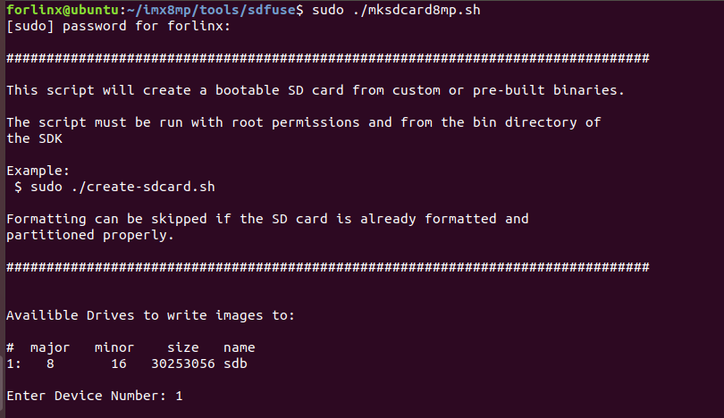
Select the TF card device, taking “1” as an example.

Enter “y” to confirm.
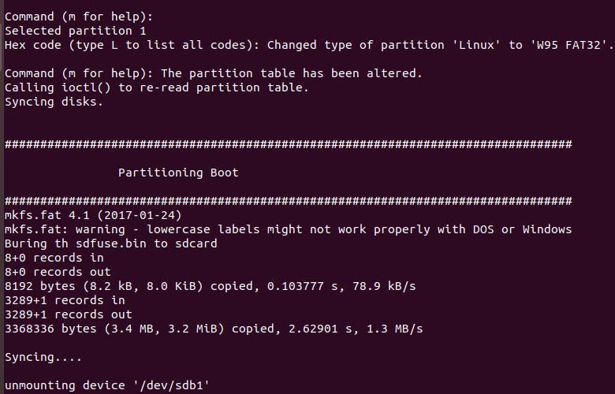
Production is complete.
Note: After business card printing according to the script at this time, the TF card will be automatically unloaded. If you want to still mount it on the development environment after business card printing is completed, you need to modify the business card printing script mksdcard8mp.sh:
forlinx@ubuntu:~/imx8mp/tools/sdfuse$ vi mksdcard8mp.sh
[…]
for i in `ls -1 $DRIVE?`; do
echo "unmounting device '$i'"
# umount $i 2>/dev/null //Comment out the command at the end of the script
done
6.2.2 Copying and Writing Image
The factory image can be copied to the FAT32 partition of the TF card in the downloaded data, and the image is in the following path
Path: OKMX8MPQ-C (Android) user profile \ Android \ image \ tfcard
Specific options to be copied are shown in the table below.
Copy the android image and the burning tool to the FAT32 partition of the burning TF card.
File |
Description |
|---|---|
config.ini |
Flash configuration files, in the tools/sdfuse directory |
ramdisk.img |
Flash configuration files, in the tools/sdfuse directory |
imx-boot.bin |
The card provisioning file is located in the tools/sdfuse directory. |
dtbo-imx8mp.img |
Flash image, compile and generate |
partition-table.img |
Flash image, compile and generate |
vendor_boot.img |
Flash image, compile and generate |
u-boot-imx8mp.imx |
Flash image, compile and generate |
vbmeta-imx8mp.img |
Flash image, compile and generate |
boot.img |
Flash image, compile and generate |
logo_raw.img |
Flash image, generated using logo.img |
super_raw.img |
Flash image, generated using super.img |
kernel |
Image and OK8MP.dtb are placed in the folder, which is used to boot during the burning phase |
How to generate logo_raw.img and system_raw.img:
forlinx@ubuntu:~/imx8mp/tools/sdfuse$ simg2img logo.img logo_raw.img
forlinx@ubuntu:~/imx8mp/tools/sdfuse$ simg2img super.img super_raw.img
If simg2img is not found, use the sudo apt-get install android-tools-fsutil command to install it.
6.2.3 TF Card Flashing Test
Turn off the power of the development board, insert the TF card into the TF card holder, and set the startup dial code to the TF card startup state according to the schematic diagram
Turn on the power switch, and the development board will automatically start to enter the flashing program. Please pay attention to the flashing progress by debugging the serial port or observing the flashing change of the heartbeat lamp D1. When D1 flashes once per second, it indicates that the flashing is completed.
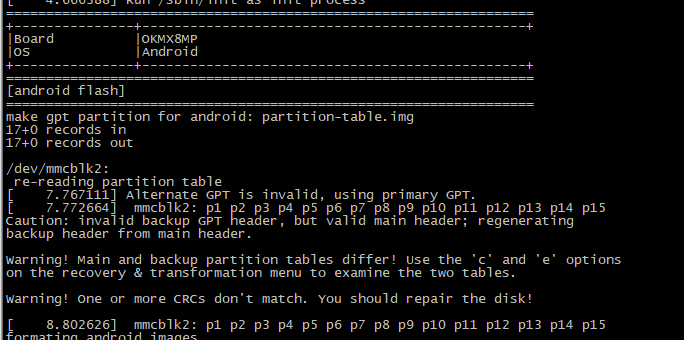